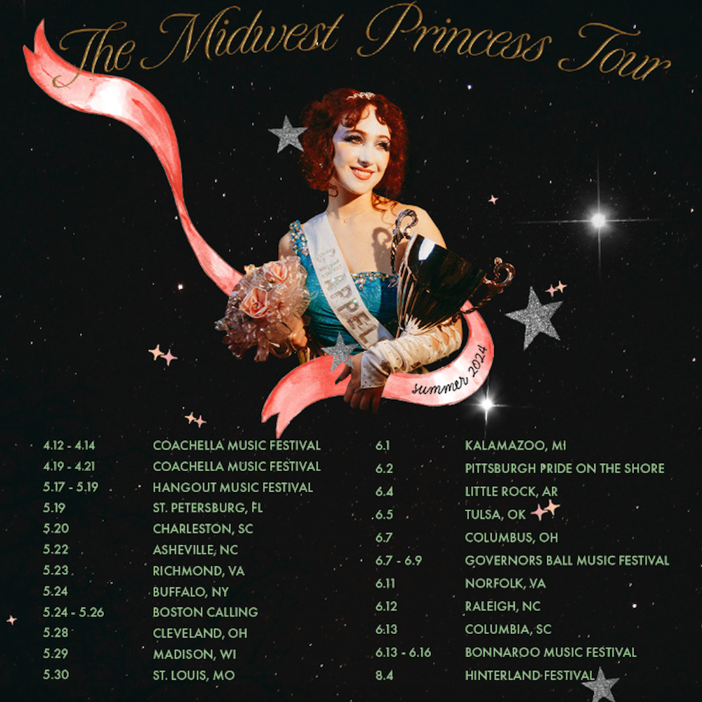
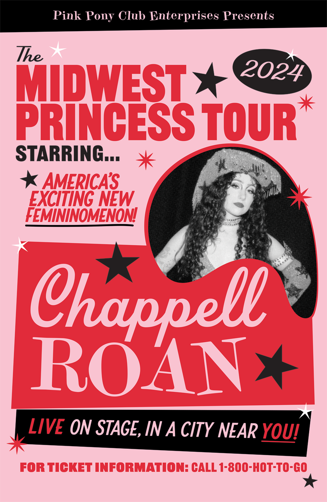
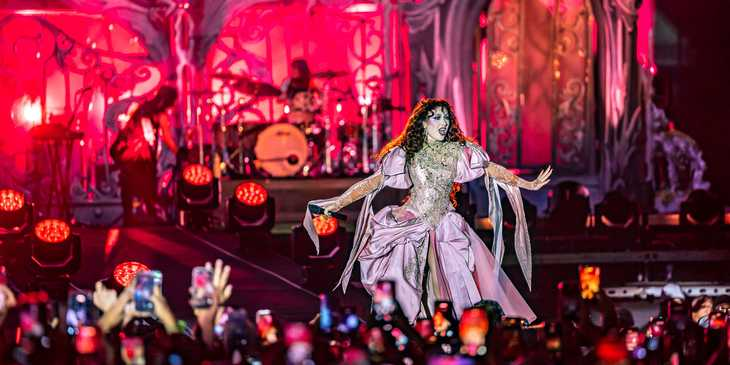

Navegación

De los pequeños clubes de 2017 a los festivales más grandes del mundo en 2025, el ascenso de Kayleigh Amstutz es uno de los más espectaculares del pop moderno.
Joy - Lay It On Me Tour - 2017
Con apenas 19 años y su EP debut School Nights recién salido, Chappell subió a los escenarios norteamericanos como support de Vance Joy. Pocos la conocían, pero los que estaban ahí recuerdan haber visto algo especial.
Modern - Declan McKenna Tours - 2017/18
Dos giras más en las que Roan fue afinando su puesta en escena y construyendo un pequeño pero devoto fanbase. La gira de McKenna la llevó fuera de EE.UU. por primera vez.
Rodrigo - SOUR Tour - 2022
El salto más grande hasta ese momento. Acompañar a Rodrigo en estadios y grandes venues le dio a Roan una exposición masiva antes de que su álbum debut estuviera siquiera listo. Para muchos fans de Olivia, fue su primera vez viendo a Chappell.
Ben Platt - The Reverie Tour · Fletcher - Girl of My Dreams Tour -2022
Ese mismo año hizo dos giras más como support. 2022 fue un año de trabajo intensísimo: dos giras sold-out (como support) y elogios de Rolling Stone, Pitchfork y Billboard antes de tener álbum.
Naked in North America Tour - 2023
Su primera gira como artista principal. Pequeños venues, energía enorme. Aquí nació el fenómeno que sería: shows íntimos donde el público ya coreaba cada palabra y se disfrazaba de sus personajes.
Naked in London Tour - 2023
Una extensión europea de su primera aventura como headliner, que demostró que su fanbase cruzaba el Atlántico. Londres la recibió con los brazos abiertos.

The Midwest Princess Tour - 2023/24
89 shows, tres continentes, y el inicio de un fenómeno cultural. Arrancó en el Gillioz Theatre de Springfield, Missouri (su ciudad natal) el 20 de septiembre de 2023 y cerró en Austin, Texas, el 13 de octubre de 2024. La gira tuvo tres legs: Norteamérica, Europa/Australia, y una tercera vuelta a EE.UU. con fechas en festivales como Austin City Limits y All Things Go. Los venues fueron creciendo show a show mientras "Good Luck, Babe!" se volvía viral.
Olivia Rodrigo - GUTS World Tour2023/24
Mientras corría su propia gira, también hizo una vuelta de honor como support de Olivia Rodrigo en la GUTS World Tour. El círculo se cerraba: la artista que la ayudó a despegar en 2022 la convocó nuevamente, esta vez con Roan ya siendo una estrella por derecho propio.

Visions of Damsels & Other Dangerous Things Tour - 2025
Su gira más ambiciosa hasta la fecha. Arrancó en junio de 2025 y llevó a Chappell a arenas y estadios en EE.UU. y Europa, incluyendo una noche sold-out en el Hallenstadion de Zúrich (con menos del 1% de entradas disponibles) y slots estelares en Leeds y Reading Festival. El setlist incluye sus grandes hits junto al nuevo material: "The Giver" y "The Subway".
Lollapalooza Sudamérica - 2026
Por primera vez en su carrera, Chappell Roan cruzó el ecuador y llegó a Sudamérica como headliner de las tres ediciones del Lollapalooza regional. Chile fue la primera parada (13-15 de marzo, Parque Bicentenario de Cerrillos, Santiago), seguida de Argentina (13-15 de marzo, Hipódromo de San Isidro, Buenos Aires) y finalmente Brasil (20-22 de marzo, Autódromo de Interlagos, São Paulo). Compartió cartel con Sabrina Carpenter, Tyler the Creator, Lorde, Deftones y Skrillex, entre otros. Su llegada al continente fue uno de los momentos más esperados de la temporada de festivales, con fans que viajaron desde distintos países solo para verla.